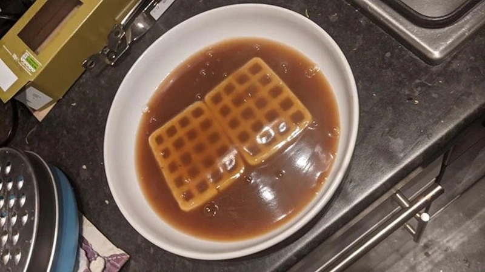

Potato Waffles Floating in Gravy

I know, I know, I know... potato waffles? In a bowl of just gravy?
Well yea. You'd be surprised I think! Very surprised. Not even I have tried this recipes. What, are these recipes genuinly for the use for others to look- well if it even helps anyone then sure, knock yourselves out. I'll never try this recipes but what the hell?
Ingredients~
- Somehow get yourself to the point where you have a potato in the shape of a waffle?
- Canned Gravy?
- A plate
Steps~
- Either get a pre-packaged frozen potato waffle, defrost it etc. OR just flatten out, poke some holes into any potato substitute any other potato product out there.
- Fry that shit up in a pan with a drizzle of oil on medium high heat for probably 4-5 minutes on both sides.
- Take out that bad boi of canned gravy and either heat it over a stove top in a saucepan for 8-9 minutes on medium heat til boiling, occasionally stirring; or just pop it in a bowl to microwave it for about a minute-minute half.
- plate on a plate like salt-bae or ramsay and enjoy something-